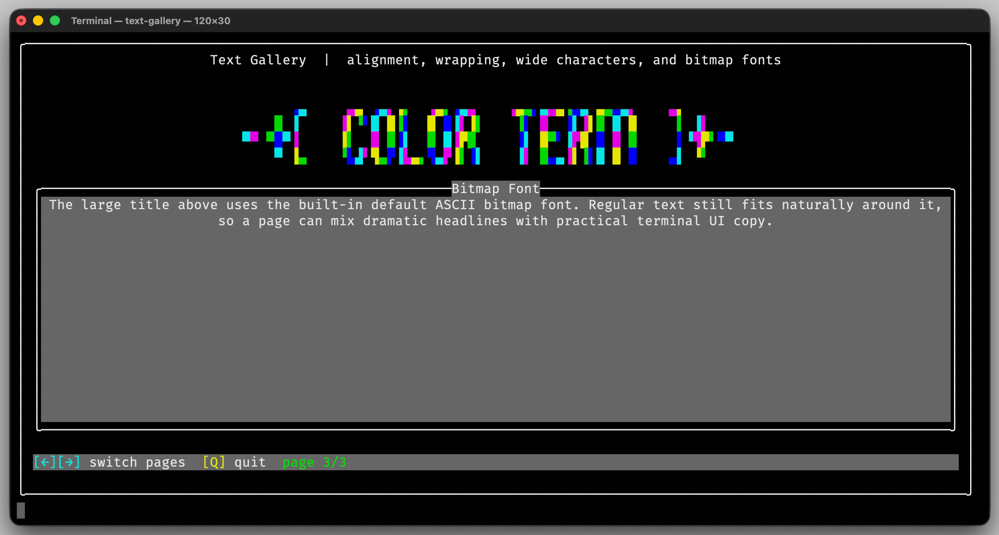

Font
The font classes allow you to render large bitmap-based text directly in the terminal. Fonts are primarily used for titles, banners, and other decorative elements in terminal interfaces.
A Font defines how characters are rendered as bitmap glyphs,
which are then drawn onto the terminal buffer.
Usage
Rendering a Bitmap-Font Title
Font integrates directly with Text. Assign a font to a
Text object and render it like any other text block.
auto title = Text{String{"COLOR TERM"}, Rectangle{0, 0, 60, 6}, Alignment::Center};
title.setFont(Font::defaultAscii());
title.setColorSequence(ColorSequence{
Color{fg::BrightBlue, bg::Black},
Color{fg::BrightCyan, bg::Black},
Color{fg::BrightMagenta, bg::Black},
Color{fg::BrightYellow, bg::Black},
});
title.setAnimation(TextAnimation::ColorDiagonal);
buffer.drawText(title, animationCycle);
The built-in defaultAscii() font renders large ASCII characters
using a bitmap representation. Because fonts integrate with Text,
all existing features—such as alignment, color sequences, and text
animation—work automatically.
{kind=link}

The text-gallery demo uses the built-in ASCII font for its
animated headline.
Interface
-
class Font
A bitmap font used to render stylized terminal text.
Public Types
Public Functions
-
Font() = default
Create an empty font with height
0.
-
explicit Font(int height) noexcept
Create an empty font with the given glyph height.
- Parameters:
height – The glyph height in bitmap rows.
-
Font(int height, GlyphMap glyphs) noexcept
Create a font with the given glyph height and glyph map.
- Parameters:
height – The glyph height in bitmap rows.
glyphs – The initial glyph map.
-
void addGlyph(std::string name, FontGlyph glyph)
Add or replace one glyph in this font.
- Parameters:
name – The UTF-8 encoded character represented by the glyph.
glyph – The bitmap glyph.
-
void setHeight(int height) noexcept
Set the configured font height in bitmap rows.
- Parameters:
height – The new glyph height.
-
int height() const noexcept
Get the configured font height in bitmap rows.
-
Font() = default
-
class FontGlyph : public erbsland::cterm::Bitmap
A bitmap glyph that can be used by a terminal text font.
Public Functions
-
FontGlyph() = default
Create an empty glyph.
Public Static Attributes
-
static constexpr auto cMaxGlyphWidth = 64
Maximum supported glyph width when importing numeric row masks.
-
FontGlyph() = default